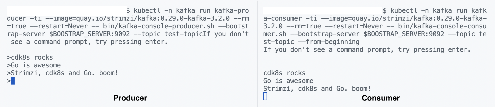

Using Custom Resource Definitions with cdk8s
cdk8s (Cloud Development Kit for Kubernetes) is an an open-source framework (part of CNCF) using which you can define your Kubernetes applications with regular programming languages (instead of yaml). One of the previous chapter covered the getting started experience and using cdk8s-plus library to further improve upon the core cdk8s library features. We are going to continue and push cdk8s even further.
This chapter will demonstrate how you can use Kubernetes Custom Resource Definitions with cdk8s. We will start off with a simple Nginx example and then you will use the combination of Strimzi project CRDs along with Go and cdk8s to define and deploy a Kafka cluster on Kubernetes!
I am assuming that you've have some knowledge of Kubernetes Custom Resource Definitions and have probably even used a few in the form of Operators. If not, that's ok! The Kubernetes documentation covers it quite well. You can always refer to it, come back here and follow along!
cdk8s lets you use Kubernetes API objects directly in your code, without having to import individual Go client packages, all thanks to cdk8s import. (also mentioned in the "Wait, what about the Kubernetes API dependencies??" section the previous chapter. But you can also use it for Custom Resource Definitions! Let's see this in action.
Before you begin...
Make sure you have Go (v1.16 or above) and cdk8s CLI installed. Also, you need to have access to a Kubernetes cluster. For learning and experimentation I would recommend using a single-node cluster running locally - such as minikube, kind, etc.
I generally use
minikube, so setting up a cluster is as simple asminikube start
To install cdk8s CLI
You can choose from the below options:
#homebrew
brew install cdk8s
#npm
npm install -g cdk8s-cli
#yarn
yarn global add cdk8s-cli
Alright, lets get started...
Although this chapter will provide step-by-step instructions, you can always refer to the complete code on Github
cdk8s makes it really easy for you get started and bootstrap your application. You don't need to guess and figure out how to structure your project, setup dependencies etc. since the cdk8s init command does it for you!
cdk8s init go-app
#output
....
Your cdk8s Go project is ready!
cat help Prints this message
cdk8s synth Synthesize k8s manifests to dist/
cdk8s import Imports k8s API objects to "imports/k8s"
Deploy:
kubectl apply -f dist/
Update the generate go.mod file, and replace it with the following - this is to make things simpler for you.
Feel free to use the latest version of the modules if needed.
module cdk8s-crd
go 1.16
require (
github.com/aws/constructs-go/constructs/v10 v10.1.42
github.com/aws/jsii-runtime-go v1.61.0
github.com/cdk8s-team/cdk8s-core-go/cdk8s/v2 v2.3.34
)
To start with, let's work with a really (really!) simple Custom Resource Definition
I am going to use a sample CRD from the Kubernetes example. To be honest, it doesn't really do anything. But, since we're just getting started, this should suffice!
First, install/register the CRD resource itself:
kubectl apply -f https://raw.githubusercontent.com/kubernetes/sample-controller/master/artifacts/examples/crd.yaml
Confirm whether the CRD was installed:
kubectl get crd
# output
NAME CREATED AT
foos.samplecontroller.k8s.io 2022-07-08T09:28:46Z
kubectl get foos.samplecontroller.k8s.io
#output (as expected)
No resources found in default namespace.
So, we just installed a CRD with the name foos.samplecontroller.k8s.io and type Foo. Its possible to create an instance of this using yaml... but...
We are here to write Go code!
To do that, first import the CRD as an API using cdk8s - this will automatically create the corresponding Go API representations (structs etc.):
cdk8s import https://raw.githubusercontent.com/kubernetes/sample-controller/master/artifacts/examples/crd.yaml
Check the imports directory, an additional folder should have been created.
imports/
└── samplecontrollerk8sio
├── internal
│ └── types.go
├── jsii
│ ├── jsii.go
│ └── samplecontrollerk8sio-0.0.0.tgz
├── samplecontrollerk8sio.go
├── samplecontrollerk8sio.init.go
└── version
We can now use the CRD just like any other Kubernetes resource/API (like Deployment) and import it in the cdk8s Go code. Create a new file called foo.go and copy the following code:
package main
import (
"cdk8s-crd/imports/samplecontrollerk8sio"
"github.com/aws/constructs-go/constructs/v10"
"github.com/aws/jsii-runtime-go"
"github.com/cdk8s-team/cdk8s-core-go/cdk8s/v2"
)
type FooChartProps struct {
cdk8s.ChartProps
}
func NewFooChart(scope constructs.Construct, id string, props *FooChartProps) cdk8s.Chart {
var cprops cdk8s.ChartProps
if props != nil {
cprops = props.ChartProps
}
chart := cdk8s.NewChart(scope, jsii.String(id), &cprops)
samplecontrollerk8sio.NewFoo(chart, jsii.String("foo1"), &samplecontrollerk8sio.FooProps{Spec: &samplecontrollerk8sio.FooSpec{DeploymentName: jsii.String("foo1-dep"), Replicas: jsii.Number(2)}})
return chart
}
See how we created an instance of samplecontrollerk8sio.Foo:
- Imported the autogenerated CRD API from the cdk8s-crd/imports/samplecontrollerk8sio package,
- Used the NewFoo function and provided the metadata via FooProps
Replace the contents of main.go with the following:
package main
import (
"github.com/cdk8s-team/cdk8s-core-go/cdk8s/v2"
)
type MyChartProps struct {
cdk8s.ChartProps
}
func main() {
app := cdk8s.NewApp(nil)
NewFooChart(app, "FooApp", nil)
app.Synth()
}
All we is include the Chart that we defined just now (in foo.go) and include it in the cdk8s App.
To create the Foo resource...
Run cdk8s synth - this will result in a manifest in the dist folder:
apiVersion: samplecontroller.k8s.io/v1alpha1
kind: Foo
spec:
deploymentName: foo1-dep
replicas: 2
metadata:
name: fooapp-foo1-c80094ac
To create it in Kubernetes:
kubectl apply -f dist
You can confirm by running :
kubectl get foo
kubectl get foos.samplecontroller.k8s.io
To introspect further, you can use the name of the created resource e.g.
kubectl describe foo/fooapp-foo1-c80094ac
Alright, now that you've seen a simple example, we can move on to something slightly more advanced.
Setup Kafka on Kubernetes using Strimzi, cdk8s and Go
Strimzi is an open-source CNCF project and one of my personal favourites! If you don't know about Strimzi, that's ok. It's enough to understand that it provides a way to run an Apache Kafka on Kubernetes with the help of Custom Resource Definitions and corresponding Operators for components such as Kafka cluster, Kafka Connect topic, users, Kafka Mirror etc.
Here is a high-level diagram of how the different Strimzi components interact. Since a Strimzi deep-dive is out of scope, I would recommend that you refer its (excellent!) documentation for details.

As before, we need to first install the CRD itself (you can also refer to the Strimzi Quickstart)
kubectl create namespace kafka
kubectl create -f 'https://strimzi.io/install/latest?namespace=kafka' -n kafka
# wait for the Operator Pod to start up (Running)
kubectl get pod -n kafka --watch
You can also check the Operator logs using
kubectl logs deployment/strimzi-cluster-operator -n kafka -f
Each supported Kafka component (cluster, connect, user etc.) has a corresponding Custom Resource Definition - for the purposes of this chapter, we will just use the Kafka cluster and topic CRDs. Let's import them as an API:
cdk8s import https://raw.githubusercontent.com/strimzi/strimzi-kafka-operator/main/install/cluster-operator/040-Crd-kafka.yaml
cdk8s import kafkatopic:=https://raw.githubusercontent.com/strimzi/strimzi-kafka-operator/main/install/cluster-operator/043-Crd-kafkatopic.yaml
Note that I've prepended
kafkatopicto the module name for Kafka topic CRD
Check the imports folder - you should see two additional folders named kafkastrimziio and kafkatopic_kafkastrimziio.
Time for some Go code, again
Create a kafka_strimzi.go file and copy the code from Github repo:
Or you can also simply do this:
curl -o kafka.go https://raw.githubusercontent.com/abhirockzz/cdk8s-for-go-developers/master/part3-crd/kafka_strimzi.go
I will walk you through the important parts of the code here. Start with the NewKafkaChart function that creates a new Chart.
func NewKafkaChart(scope constructs.Construct, id string, props *KafkaChartProps) cdk8s.Chart {
//.... ommitted for brevity
chart := cdk8s.NewChart(scope, jsii.String(id), &cprops)
See how the Kafka cluster is defined using kafkastrimziio.KafkaProps struct (for a deep-dive into each of these components you can refer to Strimzi documentation). We specify the Kafka version, number of nodes/replicas (we will stick to a single node replica) how to expose the cluster etc.
//....
&kafkastrimziio.KafkaProps{
Spec: &kafkastrimziio.KafkaSpec{
Kafka: &kafkastrimziio.KafkaSpecKafka{
Version: jsii.String("3.2.0"),
Replicas: jsii.Number(1),
Listeners: &[]*kafkastrimziio.KafkaSpecKafkaListeners{
{
Name: jsii.String("plain"),
Port: jsii.Number(9092),
Type: kafkastrimziio.KafkaSpecKafkaListenersType_INTERNAL,
Tls: jsii.Bool(false),
},
},
//....
Then we add required config for the Kafka cluster (in-line with the fact that we have a single node cluster only) as well as storage (ephemeral storage will work for this example).
//...
Config: map[string]interface{}{
"offsets.topic.replication.factor": 1,
"transaction.state.log.replication.factor": 1,
"transaction.state.log.min.isr": 1,
"default.replication.factor": 1,
"min.insync.replicas": 1,
"inter.broker.protocol.version": "3.2",
},
Storage: &kafkastrimziio.KafkaSpecKafkaStorage{
Type: kafkastrimziio.KafkaSpecKafkaStorageType_EPHEMERAL,
},
//...
Finally, we configure Zookeeper as well as the Entity operator that handles Kafka topics (as well as users, although we don't use it here)
//...
Zookeeper: &kafkastrimziio.KafkaSpecZookeeper{
Replicas: jsii.Number(1),
Storage: &kafkastrimziio.KafkaSpecZookeeperStorage{
Type: kafkastrimziio.KafkaSpecZookeeperStorageType_EPHEMERAL,
},
},
EntityOperator: &kafkastrimziio.KafkaSpecEntityOperator{
TopicOperator: &kafkastrimziio.KafkaSpecEntityOperatorTopicOperator{},
}}})
//...
To wire it up, update the main.go file:
func main() {
app := cdk8s.NewApp(nil)
//NewFooChart(app, "FooApp", nil)
NewKafkaChart(app, "KafkaApp", nil)
app.Synth()
}
To create a Kafka cluster using the CRD...
Follow the the usual workflow:
# generate manifest (check it in dist folder)
cdk8s synth
# apply it (note the kafka namespace)
kubectl apply -f dist/ -n kafka
Wait for the resources to be created:
KAFKA_CRD_INSTANCE_NAME=$(kubectl get kafka -n kafka -o=jsonpath='{.items[0].metadata.name}')
kubectl wait kafka/$KAFKA_CRD_INSTANCE_NAME --for=condition=Ready --timeout=300s -n kafka
Once all the Kafka cluster resources are created, you should see the following message - kafka.kafka.strimzi.io/<name of your Kafka CRD instance> condition met. The Kafka cluster is now ready and we can test it using the good old Kafka CLI based producer and consumer (instructions in Strimzi quickstart).
BOOSTRAP_SERVER=$(kubectl get kafka -n kafka -o=jsonpath='{.items[0].metadata.name}')-kafka-bootstrap
kubectl -n kafka run kafka-producer -ti --image=quay.io/strimzi/kafka:0.29.0-kafka-3.2.0 --rm=true --restart=Never -- bin/kafka-console-producer.sh --bootstrap-server $BOOSTRAP_SERVER:9092 --topic test-topic
kubectl -n kafka run kafka-consumer -ti --image=quay.io/strimzi/kafka:0.29.0-kafka-3.2.0 --rm=true --restart=Never -- bin/kafka-console-consumer.sh --bootstrap-server $BOOSTRAP_SERVER:9092 --topic test-topic --from-beginning

That's all for now!
Time to wrap up...
You learnt how to combine Kubernetes Custom Resource definition with cdk8s. This is really powerful and means that you can continue to use code (in this case, written in Go) to define built-in Kubernetes resources (like Deployments etc.) as well as Custom resources!
Did you like what you tried?
Well, you can continue learning! Couple of suggestions:
- You can try updating the existing code to add a
Deploymentresource that refers to a Kafka client app (you have to write it and package it as a Docker container first) and can access the Kafka cluster you created. Explore how you can get the connectivity parameters.. - The Kafka cluster we created was configured to have Internal access only. Explore options to expose it externally (refer to Strimzi documentation) and update the code to implement that (should be a small change). Which Kubernetes objects will be affected by it?